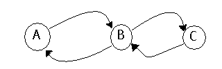

DEMONSTRATION OF UNWISE USE OF SSH
If my machine was running the secure shell daemon as well as the machine I wanted to connect to, I could connect securely from my machine to the host machine. However, this is not assured, since not all programs are routed through the daemon (only Secure Shell commands are.) For example, below are three machines. I am on A, and want to send a file to C securely. I have many options, but I choose to use ftp (the same could be said of telnet as well), thinking that since I have Secure Shell, I am safe (how foolish of me!!)

Thus, the packets that A (as root) sends to C through B may look like:
4500 0035 051f 4000 4006 0b6c 813e 93dd
Where:
813e 93de 0418 0017 0d14 d5f0 1a2a
4993 xxxx
is the IP header
8018 7d78 0c64 0000 0101 080a 0445 6991
yyyy is the TCP header
0446 d591 30
zzzz is the packet data
Each time you sent the packet with the data "0", you would get a similar packet (the only differences would be in the IP and TCP headers.) The hexadecimal number "30" would appear every time, no matter the user or time or machine or whether the ssh2 daemon is running. Therefore, machine B could "sniff" the packets going across his router to learn any information that he/she wanted, even though both A and C have security measures in force.
Clearly, there is no security in this method - any schmoe can figure out passwords this way. Therefore, it is imperative to use ssh2 and sftp for all network needs.